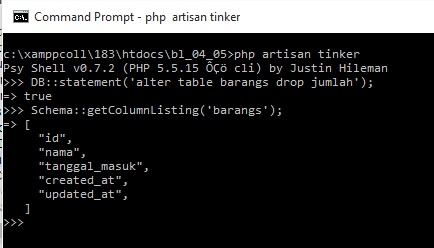

Database¶
Migration¶
Laravel memiliki fitur migration yaitu script yang bertugas untuk menangani pengolahan di database.
File migration disimpan di dalam direktori database/migration, dan secara default setelah menginstal laravel biasanya terdapat 2 file migration yaitu file migration yang menangani tabel users dan file migration password_resets yang menangani tabel password_resets.
Selain itu jika kita mengeksekusi/menjalankan migration maka laravel akan membuatkan sebuah tabel baru yaitu migrations yang berisi record dalam menjalankan migrasi.
Jika menggunakan migration maka akan terdapat beberapa keuntungan diantaranya :
- Perubahan struktur database dapat tercatat di source control (SVN, GIT, dll).
- Kita tidak perlu berkirim file SQL untuk tiap anggota member setiap kali melakukan perubahan struktur database. Member yang lain cukup mengambil source code terbaru dan menjalankan migration.
3.Ketika mengembangkan aplikasi, kita dapat melakukan undo dan redo struktur database dengan mudah.
- Jika digabungkan dengan seeding, kita dapat mereset isi database dengan mudah.
Untuk membuat sebuah migration kita dapat menggunakan perintah php artisan make:migration create_table_name dan file migration baru akan muncul pada database/migrations.
Sebagai tambahan, nama migration(class) akan berubah dengan tanpa underscore dan menjadi camelcase, seperti misalkan kita menjalankan perintah php artisan make:migration buat_tabel_barangs maka hasilnya adalah BuatTabelBarangs.
File migration akan berisi 2 method yaitu up dan down, method up dijalankan untuk membuat sedangkan method down untuk mnghapus/menghancurkan struktur tabel.
Dalam menangani pada masalah database pada migration ini kita akan menggunakan class Schema.
Misalkan ketika akan membuat tabel baru kita bisa gunakan syntax Schema::create(``namatabel,closure_struktur_tabel)``.
dalam closure struktur tabel kita akan mempasing parameter berupa variabel yang memiliki hint/dependency berupa class Blueprint, dan nantinya variabel ini akan kita gunakan untuk menyusun field table.
Untuk membuat adanya class yang sudah siap dalam membuat tabel pada method up, serta menghapus tabel pada method down , kita dapat memberikan tambahan opsi --create=namatabel.

Dalam instansiasi class blueprint, terdapat banyak sekali method yang dapat kita gunakan.
Misalkan , method increments diatas akan membuat field/column bertipe integer dengan attribut auto_increment, method string akan membuat field dengan tipe data varchar, method integer yang akan membuat fieldnya bertipe data number, method date yang akan membuat fieldnya bertipe data date, dan masih banyak yang lainnya.
Terdapat satu hal yang cukup unik dalam migration laravel, yaitu method timestamps, method ini akan membuat 2 field yaitu created_at dan updated_at.
Pembahasan lebih jauh mengapa harus terdapat field created_at dan updated_at, harusnya adanya akhiran/suffix plural(s/es) pada nama tabel, serta adanya standardrisasi struktur database dalam laravel (seperti harus adanya field id) akan dibahas lebih jauh pada materi eloquent.
untuk mengeksekusi/menjalankan migration pada laravel dapat menggunakan syntax php artisan migrate, syntax ini akan menjalankan semua file migration pada method up.
Sedangkan untuk menghapus tabel atau menghancrukan struktur tabel dapat menggunakan php artisan migrate:rollback.
Syntax php artisan migrate:rollback akan menjalankan method down pada file terakhir dalam list tabel migration (pada field batch), sedangakan untuk menjalankan method down pada semua file migration dapat menggunakan syntax php artisan migrate:reset.
Terdapat pula syntax php artisan migrate:refresh yang akan melakukan reset(menjalankan method down pada semua file migration) dan selanjutnya melakukan migrate(menjalankan method up).
Gambar :
migration juga dapat digunakan untuk menangani lebih dari satu tabel
Merubah struktur tabel¶
Kita juga dapat merubah struktur tabel (tentu setelah kita membuat tabel itu dahulu).
Kita dapat merubah atriburt field , bahkan bisa membuat adanya relasi antar tabel, tentunya dengan method yang telah disediakan oleh laravel.
Untuk merubah struktur tabel kita akan menggunakan method table pada class Schema (Schema::table(namatabel,``instansiasi_blueprint``)).
Dapat pula membuat migrasi dengan adanya method table dengan menambahkan --table=namatabel (misal php artisan make:migration –table=barangs).
Sebagai tambahan saat tulisan ini ditulis, masih belum ada cara dalam membuat field memiliki atribut unsigned pada method laravel, atribut unsigned ini diperlukan agar field dapat dijadikan reference(memiliki relasi) pada id tabel tertentu.
Namun terdapat library luar dengan nama doctrine/dbal yang dapat merubah field menjadi unsigned dan sebaliknya.
Untuk mengubah suatu field menjadi unsigned dengan library ini, diperlukan 2 method yaitu method unsigned dan method change sedangkan untuk menghilangkan atribut unsigned , dapat menggunakan method change saja
Sebelumnya dapat kita install melalui composer (composer require doctrine/dbal).
Setelah field tersebut memiliki atribut unsigned, selanjutnya kita dapat mereferensikan ke field lain.
Untuk mereferensikan ke field lain kita membutuhkan 4 method yaitu ;
method foreign , berisikan field yang akan memiliki foreign key(relasi dengan tabel lain, biasnya akan direferensikan dengan field id pada tabel lainnya)
method references , berisikan nama field yang akan dijadikan relasi (biasanya id)
method on, berisikan nama tabel yang dijadikan relasi
method onUpdate dan onDelete ,pilihan ketika data yang berelasi terjadi perubahan baik diupdate maupun dihapus.
Dan pada method down ketika terdapat adanya relasi, maka pertama-tama harus dihapus referensinya, kemudian dihapus indexnya, dan terakhir menghilangkan atribut UNSIGNED
Note
Apa itu cascade dan restrict
misalkan kita memiliki 2 buah tabel yaitu, tabel barang dan pelanggan
dan tentu akan terjadi adanya transaksi pembelian, maka dibuatlah tabel pambelian.
dari ketiga tabel ini bagaimana jika terjadi perubahan data ???
misalkan berikut adalah struktur tabelnya
tabel barang
id_barang
nama_barang
jenis_barang
tabel pelanggan
id_pelanggan
nama_pelanggan
telepon
dan dari keduanya terdapat adanya relasi, karena dan jenis relasinya adalah many to many, biasanya relasi ini akan membutuhkan sebuah tabel baru, misalkan dalam kasus ini dibutuhkan tabel pembelian
tabel pembelian
id_pembelian
id_barang
id_pelanggan
tanggal
misalkan kita telah memiliki data data dari tabel barang dan pelanggan
tabel barang
tabel pelanggan
kemudian terjadilah transaksi, maka akan mengisi di tabel pembelian
tabel pembelian
Perlu diketahui bahwa kita harus membuat index terlebih dahulu agar dapat membuat reference, namun dalam laravel, ketika kita telah membuat primary key (default adalah id dengan method increments) dan juga mereferensikan dengan field lain maka secara otomatis akan dibuatkan index.
Dan ketika mereference nama constraint nya akan sama dengan nama index-nya(nama index nya sendiri juga sudah otomatis dibuat)
ketika kita menambahkan reference maka yang bisa dijadikan reference adalah field yang memiliki index(btw secara default ketika kita menentukan primary key pada suatu field, maka field tersebut juga akan memiliki index).
Ada beberapa hal yang harus diperhatikan disini, ketika kita akan mereferensikan field pada 2 tabel atau lebih, field yang berelasi(baik yang memiliki foreign atau dijadikan reference) harus sama-sama memiliki atribut UNSIGNED, ketika cuma satu saja yang memiliki atribut ‘UNSIGNED’ maka referensi akan gagal.
Namun dalam laravel, tidak perlu merubah field yang dijadikan reference(biasanya id) untuk memiliki atribut, karena secara otomatis ketika menjalankan 4 method(foreign, references, on dan onUpdate onDelete) maka field yang dijadikan reference akan berubah secara otomatis memiliki atribut ‘UNSIGNED’.
Dan field yang memiliki atribut ‘UNSIGNED’ harus memiliki tipe data ‘integer’.
Namun jika field yang dijadikan reference dan field yang memiliki foreign sama-sama tidak memiliki atribut ‘ UNSIGNED’ maka relasi dapat dibuat.
kemudian bagaiaman dengan restrict dan cascade
Dengan adanya restrict (onDelete dan onUpdate pada relasi)
–parent table
maka tidak akan dapat melakukan delete pada data tabel barang dan pelanggan.
Dan update tidak akan bisa pada field yang dijadikan reference(dalam kasus ini adalah id_barang pada tabel barang dan id_pelanggan pada tabel pelanggan)
–child table(dalam kasus ini adalah tabel ‘pembelian’)
dapat melakukan update dan delete dengan aman
Dengan adanya cascade
–parent table
maka ketika melakukan delete pada data tabel barang dan pelanggan, maka data yang berkaitan (memiliki relasi, dalam kasus ini adalah pada tabel ‘pembelian’) akan hilang, misal kita menghapus data kulkas(id nya 1) pada tabel barang maka data pada pembelian yang memiliki id ‘1’ juga akan hilang
dan ketika melakukan update maka child (dalam kasus ini adalah tabel ‘pembelian’) juga akan mengikuti perubahan(dalam kasus ini yang dapat diubah adalah id), semisal id daripada magic jar kita ubah menjadi 20 maka pada tabel child (tabel pembelian) yang terdapat data dengan id_barang 2 akan berubah menjadi 20
child table(dalam kasus ini adalah tabel ‘pembelian’)
dapat melakukan update dan delete dengan aman
Basic CRUD Laravel¶
Note
Manipulasi database pada framework Laravel Secara umum, dalam Laravel terdapat 3 cara dalam melakukan manipulasi database, yaitu ‘Basic CRUD query’, ‘Query Builder’ dan ‘Model Eloquent’.
Kebanyakan yang digunakan adalah ‘Model eloquent’ karena lebih memiliki banyak fungsi yang memudahkan.
Namun dalam materi ini akan dibahas mengenai Basic Crud Query
Basic Crud Query adalah query dasar penggunaan CRUD(dan memang digunakan hanya pada CRUD saja).
Penggunaanya adalah dengan menjalankan class ‘DB’ kemudian mengakses method yang sesuai dengan manipulasi yang dilakukan, misal jika akan melakukan seleksi data maka menggunakan method ‘select’.
Dan parameternya berisi query sql secara manual.
Namun yang perlu diperhatikan adalah, dalam memanipulasi dengan field maka dibutuhkan adanya placeholder bindings dan named bindings.
Placeholder bindings menggunakan tanda tanya ? sedangkan named bindings menggunakan tanda double colon : dalam mengakses fieldnya.
Placeholder bindings akan mengakses field berdasarkan pada urutan(cmiiw), sedangkan pada named bindings akan diakses menurut nama fieldnya yang diawali dengan prefix tanda double colon :.
Placeholder bindings jarang digunakan, dan mungkin hanya akan digunakan pada insert.
seleksi dengan filter where
insert dengan placeholder bindings

insert dengan named bindings
query update data

query delete
DDL statement¶
Sedangkan untuk mengakses DDL seperti create, alter, drop dan lain-lain, menggunakan syntax “DB::statement(‘command’)”.
Dan untuk melihat hasilnya dapat menggunakan syntax “Schema::getColumnListing()”
Seeder¶
Laravel menyediakan fitur seeding yaitu pemberian data secara bebas menggunakan syntax php.
Dengan seeding kita dapat menambahkan data apa saja secara acak, sehingga tidak perlu membuatnya di dalam database.
file seeding disimpan pada direktori database/seeds.
file seeding hanya berisikan satu method yaitu run().
Untuk membuat file/class seeder dapat menggunakan command php artisan make:seeder namaclassseeder , misal php artisan make:seeder BuatSeederPelanggan
selanjutnya kita dapat membuka file BuatSeederPelanggan pada direktori database/seeds, dan mengedit yang menjadi isiannya.
untuk menjalankan seeder tersebut gunakan perintah : php artisan db:seed --class namaclassseeder
file database/seeds/BuatSeederBarangs
public function run() {
DB::insert('insert into barangs (nama, tanggal_masuk) values (:nama, :tanggal_masuk)', [
'nama' => "TV LED",
'tanggal_masuk' => '2016-06-07'
]);
DB::insert('insert into barangs (nama, tanggal_masuk) values (:nama, :tanggal_masuk)', [
'nama' => "TV LCD",
'tanggal_masuk' => '2016-06-08'
]);
$this->command->info('Berhasil menambah 2 barang!');
}
Tentunya akan sangat merepotkan apbila harus memanggil satu class satu persatu untuk menjalankan seeder, maka dari itu kita akan menggunakan file DatabaseSeeder .
File ini akan menjalankan semua seeder yang ditulis pada method run() di bawah Model::unguard().
Kita dapat menambahkan seedder tersebut dengan mem-passing ya ke parameter $this->class(``namaseederclass)`` , namun dalam versi terbaru laravel kita juga dapat mempasiingnya dengan class, misal $this->call(BuatSeederBarangs::class).
Kemudian kita dapat mengeksekusi seeder-seeder tersebut dengan command php artisan db:seed .
Sebagai tambahan DatabaseSeeder ini akan menjalankan method Model::unguard, untuk mengizinkan mass_assignment, tujuannya adalah data dapat dimanipulasi(insert, update, delete) dengan lebih dari satu data, tapi dalam kasus contoh dibawah kita belum menggunakannya.
Bahasan mengenai mass_assignment akan dibahas pada materi berikutnya.

Data Random¶
Dengan menggunakan syntax php pada seeder, kita dapat membuat data sendiri yang nantinya akan dapat digunakan secara acak.
Semisal dengan memanfaatkan function range, rand, perulangan for, foreach, dan sebagainya.
function range akan menentukan adanya jumlah dari angka awal(pada parameter pertama) dan angka terakhir(parameter kedua).
function rand akan menentukan angka secara acak dari angka awal(pada parameter pertama) dan angka terakhir(parameter kedua).
file database/seeds/DatabaseSeeder
public function run() {
$nama = ['kipas angin', 'sepatu', 'sandal'];
$tanggal_masuk = ['2016-06-06','2016-06-07'];
foreach (range(1,10) as $value) {
DB::insert('insert into barangs (nama, tanggal_masuk) values (:nama, :tanggal_masuk)', [
'nama' => $nama[rand(0,2)],
'tanggal_masuk' => $nama[rand(0,1)]
]);
}
$this->command->info('Berhasil menambah barang!');
}

Faker¶
Faker adalah library(class luar) yang dapat membuat data acak dengan lebih baik.
Jika kita menggunakan cara diatas (data random), maka kita perlu menentukan dahulu apa kiranya data yang akan diberikan, namun dengan faker maka kita tidak perlu mendefinisikan lagi isian datanya.
Faker dapat mengisikan data seperti nama, alamat, telepon dan lain-lain secara acak.
dalam versi laravel terakhir, biasanya class faker sudah diertakan dalam require-dev, sehingga tidak perlu menginstallnnya.
Untuk menggunakan kita harus menyertakan class faker (use FakerFactory as Faker), kemudian kita membuat object faker (disimpan ke dalam variabel), lalu kita bisa memberikan data acak dengan mengakses property dari object, misal $faker = Faker::create();
$faker->nama, maka kita akan memasukkan nama, $faker->phoneNumber, maka kita akan memasukkan nomor telepon
file database/seeds/BuatSeederBarangs
public function run()
{
$faker = Faker::create();
foreach ( range(1,10) as $index ) {
DB::insert('insert into barangs (nama, tanggal_masuk) values (:nama, :tanggal_masuk)', [
'nama' => $faker->name,
'tanggal_masuk' => $faker->date
]);
}
$this->command->info('Berhasil menambah barang!');
}
Note
class seeder not found
Jika kita tidak dapat mengeksekusi file seeder dengan keterangan [ReflectionException] Class XXX does not exist. maka solusinya adalah dengan meng-generate ulang composer dengan command composer dump-autoload
Error di seeder¶
1. error di model atau lainnya Terkadang saat melakukan seeder terdapat error yang tidak berhubungan dengan seeder tersebut misal:
ryan@ryan-Satellite-C55t-C:/var/www/html/fptrukinv2$ php artisan db:seed --class=ProvidersTableSeeder
[Symfony\Component\Debug\Exception\FatalThrowableError]
Parse error: syntax error, unexpected '}', expecting ';'
error diatas artinya ada error di model provider dan bukan di seeder.
- Tidak dapat melakukan adanya operation sum (+) di bagian contenacation (.) atau penghubung string
misal suatu seeder:
<?php
use Illuminate\Database\Seeder;
use App\User;
use App\Admin;
use App\Provider;
use Faker\Factory as Faker;
class UsersTableSeeder extends Seeder
{
/**
* Run the database seeds.
*
* @return void
*/
public function run()
{
//akan ada admin dan mitra
//pertama cek di admin ada berapa jumlah nya ,kita buat data berdasar jumlah
//lalu di bagian provider
$userableType = ['App\\Admin','App\\Provider'];
$faker = Faker::create();
$user = new User;
//admin
$adminName = ['admin','admindua','admintiga'];
$adminMail = ['admin@mail.com','admindua@mail.com','admintiga@mail.com'];
$incrementNumber = ['1','2','3'];
$adminActivated = ['1','0','0'];
$countAdmin = Admin::count();
for ($i=0; $i < $countAdmin; $i++) {
$user = $user->create([
'name' => $adminName[$i],
'email' => $adminMail[$i],
'password' => bcrypt('123123'),
'userable_id' => $i+1,
'userable_type' => 'App\\Admin',
'pp_path' => '/images/users/admin-'.$incrementNumber[$i].'.png',
'is_activated' => $adminActivated[$i]
]);
}
//provider/mitra
$countProvider = Provider::count();
for ($i=0; $i < $countProvider; $i++) {
$name = $faker->firstNameMale;
$user = $user->create([
'name' => $name,
'email' => $name.'@mail.com',
'password' => bcrypt('123123'),
'userable_id' => $i+1,
'userable_type' => 'App\\Provider',
'pp_path' => "/images/users/mitra-".$i+1.".jpg",
'is_activated' => '1'
]);
}
}
}
fokus pada 'pp_path' => "/images/users/mitra-".$i+1.".jpg",
Karena ternyata syntax $i+1 tidak dapat dijalankan
kecuali jika dihapus bagian penambahan +1 menjadi seperti:
'pp_path' => "/images/users/mitra-".$i.".jpg",
- Error karena di relasi belum ada
Untuk pembuatan seeder yang mana terdapat data yang memiliki relasi dengan tabel lain sangat dianjurkan untuk menggunakan dahulu bagian relasi tersebut.
Maksudnya tentu bukan memberikan adanya data tapi dengan mengakses relasinya, itu sudah cukup.
Misalkan:
$listProvider = Provider::lists('id')->all();
$countProvider = count($listProvider);
for ($i=1; $i <= 5; $i++) {
$provider = Provider::find(rand(0,$countProvider));
$providerId = $provider->id;
$kabupaten = $provider->kabupaten;
}
Artinya tidak perlu ada penambahan data dulu, tetapi cukup mengakses relasinya apa akan ada error atau tidak. jika ya kemungkinan ada kesalahan yang sebaiknya diperbaiki terlebih dahulu.
Biasanya error yang muncul dikarenakan tidak ada relasi adalah message Trying to get property of non-object
misal:
ryan@ryan-Satellite-C55t-C:/var/www/html/fptrukinv2$ php artisan db:seed --class=VehiclesTableSeeder
ryan@ryan-Satellite-C55t-C:/var/www/html/fptrukinv2$ php artisan db:seed --class=VehiclesTableSeeder
ryan@ryan-Satellite-C55t-C:/var/www/html/fptrukinv2$ php artisan db:seed --class=VehiclesTableSeeder
[ErrorException]
Trying to get property of non-object
- Error karena kita memodifikasi banyak file migrate(terutama penghapusan file migrate lama dan penambahan file migrate baru)
Semisal kita sebelumnya telah memiliki repo dan sudah terdapat file migrasi, hanya saja ternyata, kita memodifikasi migrasi tersebut, seperti menghapus file migrasi dan menambahkan file migrasi yang baru.
Maka ketika menjalankan perintah php artisan migrate akan terjadi error seperti berikut:
ryan@ryan-Satellite-C55t-C:/var/www/html/trukinid$ php artisan migrate:refresh
[Symfony\Component\Debug\Exception\FatalThrowableError]
Class 'CreateNotificationsTable' not found
Solusinya adalah dengan menjalankan perintah composer dump-autoload, seperti:
ryan@ryan-Satellite-C55t-C:/var/www/html/trukinid$ composer dump-autoload
Generating autoload files
ryan@ryan-Satellite-C55t-C:/var/www/html/trukinid$ php artisan migrate:refresh
Rolled back: 2017_02_24_010636_createNotificationsTable
Rolled back: 2017_02_24_001837_createHargaSewaTable
Rolled back: 2017_02_24_001823_createVehiclesTable
Rolled back: 2017_02_24_001802_createVcategoriesTable
Rolled back: 2017_02_24_001745_createComplaintsTable
Rolled back: 2017_02_24_001720_createComplaintCategoriesTable
Rolled back: 2017_02_24_001656_createFilesTable
Rolled back: 2017_02_24_001643_createDriversTable
Rolled back: 2017_02_24_001620_createProvidersTable
Rolled back: 2017_02_24_001603_createAdminsTable
Rolled back: 2014_10_12_100000_create_password_resets_table
Rolled back: 2014_10_12_000000_create_users_table
Migrated: 2014_10_12_000000_create_users_table
Migrated: 2014_10_12_100000_create_password_resets_table
Migrated: 2017_02_24_001603_createAdminsTable
Migrated: 2017_02_24_001620_createProvidersTable
Migrated: 2017_02_24_001643_createDriversTable
Migrated: 2017_02_24_001656_createFilesTable
Migrated: 2017_02_24_001720_createComplaintCategoriesTable
Migrated: 2017_02_24_001745_createComplaintsTable
Migrated: 2017_02_24_001802_createVcategoriesTable
Migrated: 2017_02_24_001823_createVehiclesTable
Migrated: 2017_02_24_001837_createHargaSewaTable
Migrated: 2017_02_24_010636_createNotificationsTable
ryan@ryan-Satellite-C55t-C:/var/www/html/trukinid$
artiya ketika ada pengubahan semua file seperti seeder,model dan migration dari suatu repo maka harus menjalankan perintah composer dump-autoload
Query BUilder¶
Selain dengan Basic CRUD query, kita juga dapat menggunakan query builder dalam laraver.
Dengan menggunakan query builder maka kita akan menggunakan object Illuminate/Database/Query/Builder.
Dalam query builder, kita akan menggunakan facade DB::table(‘namatabel’), setelahnya kita dapat menggunakan method-method yang ada, semisal untuk menggunakan select all data dapat menggunakan method get().
Berikut query builder select dalam laravel :
Select¶
Perintah select digunakan dalam menyeleksi data, dalam query builder select ini kita dapat mendapatkan data yang tidak hanya pada semua kolom/field, namun dapat mendapatkan data pada kolom terterntu
method :
- get() => mendapatkan semua data pada semua kolom/field pada tabel tertentu
- select(‘namakolom1’,…,’anothercolumn’) => mendapatkan semua data pada kolom tertentu
- first() => mendapatkan baris pertama
- find(id) => mendapatkan data pada id tertentu(ingat pada kolom/field ‘id’)
- lists(‘namakolom’) => mendapatkan semua data pada kolom tertentu
- pluck => pluck(‘namakolom’) => mendapatkan satu baris/record data pada kolom tertentu
Gambar :
mengambil semua data pada tabel, method ‘get()’
mengambil baris pertama, method ‘first()’
mengambil baris dengan id tertentu (hanya berlaku pada field id), method ‘find(nomor_id)’
menampilkan data pada field/kolom tertettnu , method lists(‘nama_field’)
perintah diatas hanya akan menghasilkan array 1 dimensi(array dengan value saja),
untuk membuat adanya key, dapat menggunakan method lists(‘name’,’id’)
fitur ini mungkin akan berguna pada dropdown list
untuk menampilkan data pada field tertentu pada baris/record tertentu, method , lists(‘nama_field’)[index_key]

sedangkan untuk menampilkan pada field tertentu pada baris/record pertama, method ‘pluck(‘nama_field’)’
menampilkan data dengan field/kolom tertentu, method ‘select(‘nama_field1’,’nama_fieldn’)->get()’
Chunk¶
Chunk adalah cara dalam membaca baris/record data di database dengan tidak membutuhkan memoty yang besar.
Bahasan ini skip dulu ya.
CRUD query builder¶
Dalam contoh diatas kita telah membahas tentang seleksi(read), kali ini kita akan membahas bagaimana query builder dalam melakukan insert, update dan delete.
berikut gambaran singkatnya :
Insert
DB::table(‘products’)->insert(array_dengan_key_field_dan_value);
Update
dalam update kita membutuhkan adanya data yang diseleksi (dengan where atau dengan method select seperti find()) DB::table(‘products’)->where(‘id’,’value’)->update(array_dengan_key_field_dan_value);
Delete DB::table(‘products’)->delete(‘id’);
Gambar :
menambah data
menambah data dengan mendapatkan id(hanya akan berfungsi jika primary key adalah id)
untuk menambahkan data secara sekaligus dapat menambahkan array ,
namun yang perlu diperhaikan disini adalah kita membuat array datanya masih di dalam satu parameter
atau array data ini berada pada satu array
[[data1],[data2],…,[datan]]
update data, dapat meggunakan field tertentu
ada beberapa hal yang harus diperhatikan dalam meng update data jangan menyeleksi datanya dengan method selain where
karena tidak akan berhasil
seperti misalkan menggunakan method ‘find’
dalam query builder update terdapat method ‘increment()’ dan ‘decrement()’ yang akan menambahkan/mengurangi satu
integer dalam increment dan ddecrement dapat pula dikonfigurasi, yaitu dengan menambahkan parameter kedua berupa integer yang dikehendaki
menambahkan pada field/kolom tertentu
menghapus pada id tertentu
menghapus dengan data pada field tertentu
menghapus dengan filter tertentu
menghapus semua data pada tabel
Where Query Builder¶
Dalam where query builder secara standard(biasanya) kita akan menggunakan method where.
Dalam menggunakan where query builder, ada beberapa hal yang perlu diperhatikan, yaitu kita harus menjalankan method ‘get()’ setelah kita menggunakan method where.
method get() digunakan sebagai fetch atau pengurai/mendapatkan data yang sesuai dengan kriterian
Dalam menggunakan query builder tidak hanya dengan equal(=) namun dapat juga menggunakan tanda bigger than (>) smaaler than (<).
tanpa adanya method ge() maka akan menghasilkan object daripada builder
dapat pula menggunakan tanda selain equal
menggunakan query like
Where query builder advance¶
Terdapat banyak kustomisasi pada where dalam SQL, dalam laravel juga tersedia kustomisasi where tersebut seperti :
- whereBetween : menyeleksi dari range tertentu, misal
- whereNotBetween : menyeleksi di luar range tertentu
- whereIn : menyeleksi pada field tertentu dengan data filter yang lebih dari satu(misalnya menyeleksi data dari field id dengan data id 2 dan 4)
- whereNotIn : kebalikan dari whereIn
- whereNull :menyeleksi data dari field tertentu yang bernilai ‘NULL’
- whereNotNull : menyeleksi data dari field tertentu yang tidak bernilai ‘NULL’
- And where : ini lebih seperti kita memberikan filter lainnya , yaitu dengan menambahkan method ‘where’
- orWhere : ini digunakan jika dalam method where tidak ada
- DynamicWhere : query yang bisa menggunakan method secara custom, method ini adalaha namafield serta dapat ditambahkan
- orderBy : query untuk mengurutkan data
- groupBy : mneyeleksi dengan mengelompokkan data dengan field tertentu
- having : ini hmpir mirip dengan method where
- Offset dan Limit ; untuk mengambil data penyeleksian dari jumlah dan nomornya
hanya beberapa yang akan dicoba, selebihnya akan dilanjutkan pada masa yang akan datang
where lebih dari satu
or where
JOIN¶
Join adalah menggabungkan lebih dari 1 tabel.
Tujuan utamanya adalah mengakses data yang berasal dari 2 atau lebih tabel.
Join biasa dilakukan pada 2 tabel atau lebih yang memiliki field yang sama yang mana nantinya akan dijadikan acuan dalam pengaksesan data(seperti penyeleksian data).
Dalam SQL terdapat beberapa tipe daripada Join yaitu :
Inner Join : menyeleksi semua data pada 2 tabel yang memiliki relasi, misal:
DB::table('customers')
->join('membership_types', 'customers.membership_type_id', '=', 'membership_types.id')
->get();
maka akan menghasilkan data dari tabel customers yang memiliki relasi dengan tabel membership_types
Left join : menyeleksi semua data pada 2 tabel yang memiliki relasi dan data pada tabel utama yang tidak memiliki relasi dengan tabel lain:
DB::table('customers')->leftJoin('membership_types','customers.membership_type_id', '=', 'membership_types.id')->get();
maka akan menampilkan semua data pada tabel customers yang memiliki relasi dengan tabel membership_types dan juga data pada customers yang tidak memiliki relasi dengan data di tabel membership_types
Right join : kebalikan dari left join:
DB::table('customers')->rightJoin('membership_types','customers.membership_type_id', '=', 'membership_types.id')->get();
maka akan menampilkan semua data pada tabel customers yang memiliki relasi dengan tabel membership_types dan juga data pada membership_type’ yang tidak memiliki relasi dengan data di tabel customers
WHERE lanjutan¶
Terkadang dalam membuat kriteria dalam menyeleksi data (filter) terdapat adanya pengelompokan.
Misalkan ketika kita akan memeberikan query sql : select * from products where name = "Civic" or (description = "Tipe manual" and price < 200000000);
maka product yang dicari adalah data yang pada column name Civic atau yang memiliki description = Tipe manual dan harga < 200000000
Dalam query builder di dalam laravel terdapat method untuk melakukan ini, yaitu dengan menggunakan anonymous function(closure) yang mana kita akan memberikan parameter $query, nantinya $query ini sebagai pengganti daripada facade DB::table('namtabel').
Namun dalam function anonymous ini tidaj perlu mereturn daripada query yang diberikan.
Misalkan kita memiliki data pada tabel barangs.
Dan kita ingin menyeleksi data dengan kriteria, data dengan id pada 4 dan 7 atau data dengan jumlah > 3 dan jumlah < 15
DB::table('barangs')->whereIn('id',[4,6])->orWhere(function($query){$query->where('jumlah','>',3)->where('jumlah','<',15);})->get();
Aggregate¶
Aggregate adalah untuk menyeleksi baris/record berdasarkan value/isi data tersebut, biasanya ini brhubungan pada data yang memiliki value dengan tipe data integer.
Beberapa method aggregate diantaranya adalah :
- count() => method ini untuk menghitung jumlah baris/record pada suatu tabel
- max() => untuk mencari data terbesar pada field tertentu
- min() => untuk mencari data terkecil pada field tertentu
- avg() => untuk mencari nilai rata rata pada field tertentu
- sum() => untuk mencari total nilai pada field tertentu
dalam melakukan penyeleksian dengan where kita juga dapat membuat parameter kedua dari method where dengan method aggregate
kombinasi dengan method where
Raw Query¶
Untuk menggunakan raw query kita dapat menggunakan DB::raw().
Penggunaan raw query ini misal akan memanipulasi value pada baris/record.
Misal dalam query SQL kita memiliki query : select sum(price*stock) from products;
maka dengan query buillder kita dapat menggunakan : DB::table('products')->sum(DB::raw('price*stock'));
jika semisal langsung menggunakan syntax : DB::table(‘products’)->sum(‘price*stock’); akan langsung error karena method sum tidak menerima parameter selain nama field/kolom
Migration¶
Constraint Relation (Pembuatan relasi dari constraint)¶
Laravel memberikan adanya fitur rollback/reset/refresh sehingga tabel yang dibuat dapat dihapus kembali, namun ada beberapa hal yang perlu diperhatikan.
Sejatinya ketika suatu tabel telah memiliki adanya relasi constraint(cascade/restrict) maka dipastikan tabel parent tidak akan dapat dihapus(truncate), kecuali jika relasi constraint tersebut dihilangkan dahulu (dari child).
Namun laravel telah dapat menyediakan fitur ini secara otomatis (hapus constraint baru hapus tabel).
Hanya saja jika mengalami adanya error (khususnya karena kesalahan dari struktur yang menggunakan foreign key) maka penanganannya akan jauh lebih menyulitkan karena error log yang tidak mudah untuk dibaca.
Berikut beberapa studi kasus mengenai error migrate mengenai relasi.
- Tidak dapat melakukan refresh
misal:
php artisan migrate:refresh
[Illuminate\Database\QueryException]
SQLSTATE[23000]: Integrity constraint violation: 1217 Cannot delete or update a parent row: a foreign key constraint fails (SQL: drop table `vcategories`)
[PDOException]
SQLSTATE[23000]: Integrity constraint violation: 1217 Cannot delete or update a parent row: a foreign key constraint fails
error diatas mengindikasikan bahwa tabel vcategories tidak dapat dihapus karena memiliki adanya tabel yang memuat idnya sebagai foreign key (dengan adanya constraint).
Artinya kita tidak akan dapat melakukan refresh melalui terminal tetapi hanya bisa melalui mysql (phpmyadmin), dengan delete tabel beserta constraintnya.
Namun sebetulnya error diatas itu biasa disebabkan adanya kesalahan dari migrate sebelumnya (php artisan migrate => berujung error)
dalam kasus diatas memang sebelumnya terdapat error seperti berikut:
php artisan migrate
Migration table created successfully.
[Illuminate\Database\QueryException]
SQLSTATE[HY000]: General error: 1215 Cannot add foreign key constraint (SQL: alter table `vehicles` add constraint vehicles_driver_id_foreign foreign key (`driver_id`) references `drivers` (`id`) on delete cascade on update cascade)
[PDOException]
SQLSTATE[HY000]: General error: 1215 Cannot add foreign key constraint
yang artinya ketika migrate belum ada adanya attributes unsigned pada foreign key.
Error diatas kemungkinan tidak akan terjadi di mysql (phpmyadmin), namun di laravel terminal akan terjadi error, maka dari itu sebelumnya cek apakah sudah terdapat adanya attribute unsigned pada foreign key yang akan diberikan suatu constraint
Menambahkan migrasi baru ke bagian tengah (tidak ke bagian terakhir)¶
1.buat migrasi 2.rename dengan tanggal dan waktu yang sekiranya setelah dari migrasi tertentu yang diinginkan 3.composer dump-autoload
DB RAW¶
penggunaan “DB::raw(query)” dalam laravel adalah penggunaan raw query dalam laravel raw query adalah query SQL dalam memanipulasi datanya, seperti misalkan adalah menghitung nilai minimal DB::raw(‘min(bids.harga_penawaran+bids.cash_penawaran) as data’) “DB::raw” akan sangat berguna karena dalam laravel tidak kesemua query sql dimasukkan dalam query builder namun perlu diketahui bahwa “DB::raw” akan menghasilkan adanya is_null pada query sql SELECT * FROM … is null
untuk menghilangkannya, maka harus menggunakan adanya pembungkus whereRaw pada “DB::raw()”, ini ditemukan pada forum https://github.com/laravel/framework/issues/1591
misal:
$apps = $apps->whereRaw(DB::raw('CASE WHEN senders.fleksibilitas = "segera" THEN senders.waktu_pengambilan >= '."'".$today."'".' WHEN senders.fleksibilitas = "fleksible" THEN senders.batas_akhir_pengambilan >= '."'".$today."'".' END'));
sedikit catatan mengenai “DB::raw()”, syntax “DB::raw()” ini akan dibungkus pada bagian yang mana akan ditampilkan/digunakan
penulis belum tahu bagaimana menggunakannya yang jelas ini biasa digunakan pada where dan beberapa
secara harfiah “DB::raw” akan mengeksekusi adanya perintah yang berkaitan denga query sql
DB::insert( DB::raw('insert into products (name, description, price) values ("CR-V", CONCAT("I-VTEC Manual. Diinput tanggal ", NOW()), 395000000)') );
artinya adalah dapat menjalankan method “now()”, jika langsung di dalam DB::insert(query) maka akan gagal
selain itu ini juga digunakan pada beberapa query sql namun di dalamnya
DB::table('products')->sum(DB::raw('price*stock'));
hasilnya adalah select sum(price*stock) from products;
artinya adalah menjumlahkan field “price” dan “stock” pada semua baris(satu beris menghasilkan “price”*”stock” lalu ditambah baris berikutnya) dan menjadi satu field saja
kemudian bagaimana dengan peletakkannya jadi gini jika di dalam where(seperti where(DB::raw(query))) maka ini akan diletakkan di where dan kalau di select (seperti select(DB::raw(query))) maka ini akan diletakkan di select
misal:
whereRaw(DB::raw('CASE WHEN senders.fleksibilitas = "segera" THEN senders.waktu_pengambilan >= '."'".$today."'".' WHEN senders.fleksibilitas = "fleksible" THEN senders.batas_akhir_pengambilan >= '."'".$today."'".' END'));
select CASE WHEN senders.fleksibilitas = "segera" THEN senders.waktu_pengambilan >= '2016-09-24' WHEN senders.fleksibilitas = "fleksible" THEN senders.batas_akhir_pengambilan >= '2016-09-24' END from
select(DB::raw('CASE WHEN senders.fleksibilitas = "segera" THEN senders.waktu_pengambilan >= '."'".$today."'".' WHEN senders.fleksibilitas = "fleksible" THEN senders.batas_akhir_pengambilan >= '."'".$today."'".' END'));
select ... where `tenders`.`status` = ? and CASE WHEN senders.fleksibilitas = "segera" THEN senders.waktu_pengambilan >= '2016-09-24' WHEN senders.fleksibilitas = "fleksible" THEN senders.batas_akhir_pengambilan >= '2016-09-24' END
First , Find , Create , New pada laravel¶
dalam laravel terdapat syntax pencarian data ketika pencarian data tidak ditemukan maka akan dibuatkan data secara otomatis
terdapat 2 cara pencarian dengan 2 metode yang sama, yaitu
- find => mencari via id(primary key)
- first => mencari via field lain
2 metode 1.create => langsung membua
studi kasus pada tabel users kita tela memiliki data dengan isian “name” = “tyu” dan “email” = “partono@mail.com” tapi tidak memiliki data name = “ari” dan “email” = “ari@mail.com” ingat lah bahwa penggunaan method save akan menyimpan data, tetapi jika data sudah ada ya gak akan dibuat
misal:
>>> $app = App\User::firstOrNew(['name' => 'tyu', 'email' => 'partono@mail.com']);
=> App\User {#1010
id: 14,
name: "tyu",
email: "partono@mail.com",
user_role: "",
userable_id: 1,
userable_type: "App\Driver",
created_at: "2016-09-08 13:35:22",
updated_at: "2016-09-13 08:54:57",
pp_path: "/images/drivers/20160908133522.543072_449159221799841_595971544_n.jpg",
}
>>> $app->save();
=> true
//ini tidak akan dibuat
>>> $app = App\User::firstOrNew(['name' => 'ari', 'email' => 'ari@mail.com']);
=> App\User {#1009
name: "ari",
email: "ari@mail.com",
}
>>> $app->save();
=> true
>>>
//ini akan dibuat datanya
Transaction¶
Transaksi database adalah teknik dalam melakukan DML(Insert , Update dan Delete) dengan lebih aman.
Data akan aman dikarenakan setiap terjadi kegagalan maka SQL tidak akan mengeksekusi query.
Transaksi database akan sangat berguna apabila akan melakukan proses DML dari lebih pada 1 tabel atau query yang lebih dari satu.
Dalam melakukan transaksi terdapat 3 hal yang perlu diketahui :
- Memulai transaksi (memberikan query apa saja yang akan dijalankan)
- Rolling back transaction (Membatalkan proses query. Kesemua query yang ada tidak akan dijalankan serta akan menghentikan proses dan memberitahu bahwa proses telah selesai di database)
- Commit transaksi (Mengkonfirmasi semua query yang ada dan akan menjalankannya)
misalkan kita memiliki contoh sebagai berikut :
kita memiliki tabel order, order_product dan tabel barangs.
Dalam melakukan adanya fungsi order terdapat beberapa tahapan proses di database yang akan dilakukan yaitu sebagai berikut:
- Membuat record di table orders
- Menambah record baru di order_products
- Membayar order (mengisi field paid_at di table orders)
- Mengurangi stock product
Ketika terdapat adanya error sebelum semua tahapan itu selesai tentu akan membuat kesalahan dalam penulisan data.
Maka dari itu dibutuhkan adanya transaction yang dapat menyimpan query, dan ketika semua tidak ada error maka query tersebut akan dijalankan(commit).
Dan ketika terjadi error maka tidak akan dijalankan.
2 jenis transaction dalam laravel :
- Transaction Otomatis
Dalam transaksi otomatis kita hanya memberikan query apa saja yang diberikan, nantinya jika sukses maka akan dijalankan dan jika terdapat error akan dihentikan secara otomatis.
- Transaction Manual
Dalam transaksi manual ini kita akan menggunakan adanya commit dan rollback secara manual. maksudnya akan memberikan bagian mana yang akan dicommit jika berhasil dan bagian mana yang akan diroll back ketika gagal.
Perlu diketahui rollback akan dijalankan ketika terdapat kegagalan, yang mana nantinya proses database akan dihentikan.
Transaction Otomatis¶
Ini merupakan cara yang cukup mudah dalam menggunakan nya karena tidak perlu menyertakan adanya commit dan rollback jika nantinya akan sukses atau terjadi kegagalan.
Untuk melakukan transaksi otomatis ini kita akan menggunakan facade DB::transaction() dengan paramter adalah anonymous function yang statementnya berisikan query yang akan dijalankan.
Dalam penggunaan transaksi otomatis ini jika sukses akan dicommit (semua query akan dijalankan) dan jika terdapat kegagalan maka akan dilakukan rolling back(membatalkan semua query), dan kesemuanya itu dilakukan secara otomatis.
Contoh:
Route::get('/order-barang-transaksi-otomatis', function() {
//misalkan sebelum melakukan adanya transaksi pada order, terdapat data sebelumnya yang akan dipakai dalam transaksi
$pelanggan_id = 1;
//kita akan menambah barang dulu, namun ceritanya ini bukan bagian dari aplikasi order, artinya ini dilakukan sebelum adanya aplikasi order
$barang = DB::table('barangs')->insertGetId(['nama' => 'Laptop Toshiba','jumlah' => 2,'tanggal_masuk' => '2016-05-06']);
// memulai transaksi
DB::transaction(function() use ($pelanggan_id, $barang)
{
// Membuat record di table `orders`
$order_id = DB::table('orders')->insertGetId(['pelanggan_id'=>$pelanggan_id]);
// Menambah record baru di `order_products`
DB::table('orders_products')->insert(['order_id'=>$order_id, 'barang_id'=>$barang]);
// Membayar order (mengisi field `paid_at` di table `orders`)
DB::table('orders')->where('id',$order_id)->update(['paid_at'=>new DateTime]);
// Mengurangi jumlah product
DB::table('barangs')->where('id',$barang)->decrement('jumlah');
echo "Berhasil menjual " . DB::table('barangs')->find($order_id)->nama . '. <br>';
echo "Stock terkini : " . DB::table('barangs')->find($order_id)->jumlah;
});
});
ketika sukses(tidak terdapat error) maka semua akan dijalankan
Contoh ketika terjadi error(lihat pada bagian throw new exception):
Route::get('/order-barang-transaksi-otomatis', function() {
//misalkan sebelum melakukan adanya transaksi pada order, terdapat data sebelumnya yang akan dipakai dalam transaksi
$pelanggan_id = 1;
//kita akan menambah barang dulu, namun ceritanya ini bukan bagian dari aplikasi order, artinya ini dilakukan sebelum adanya aplikasi order
$barang = DB::table('barangs')->insertGetId(['nama' => 'Laptop Toshiba','jumlah' => 2,'tanggal_masuk' => '2016-05-06']);
// memulai transaksi
DB::transaction(function() use ($pelanggan_id, $barang)
{
// Membuat record di table `orders`
$order_id = DB::table('orders')->insertGetId(['pelanggan_id'=>$pelanggan_id]);
// Menambah record baru di `order_products`
DB::table('orders_products')->insert(['order_id'=>$order_id, 'barang_id'=>$barang]);
// Membayar order (mengisi field `paid_at` di table `orders`)
DB::table('orders')->where('id',$order_id)->update(['paid_at'=>new DateTime]);
throw new Exception("Oooppssss.. ada error!");
// Mengurangi jumlah product
DB::table('barangs')->where('id',$barang)->decrement('jumlah');
echo "Berhasil menjual " . DB::table('barangs')->find($order_id)->nama . '. <br>';
echo "Stock terkini : " . DB::table('barangs')->find($order_id)->jumlah;
});
});
ketika terjadi error maka data tidak akan berubah (data juga akan tidak ditambah)

Transaksi manual¶
Transaksi manual adalah mendefinisikan secara manual kesetiap query query yang akan dicommit (jika sukses) dan beberapa query lain yang akan dirollback jika gagal.
Transaksi manual adalah transaksi database secara advance sehingga setiap query dapat dipisah pisah yang nantinya terdapat manipulasi lain sebelum tahapan query selanjutnya.
Artinya kita dapat memberikan commit lebih dari satu dalam transaksi, ini lebih mirip dengan checkpoint.
Fungsinya secara singkat adalah kita dapat melakukan data manipulasi pada data yang telah muncul(result) dari yang telah di commit meskipun transaksi database belum selesai.
Kenapa harus ada rollback jika dipastikan akan menggunakan commit ???
Ya ini semacam pengaturan secara advance dalam SQL, karena mungkin saja ada aplikasi yang membutuhkan implementasi rollback ini.
Misalkan terdapat aplikasi tertentu yang membutuhkan penggunaan dari commit dan rollback secara bertahap.
Misalkan dalam aplikasi tersebut memiliki beberapa tahapan manipulasi database yang akan dijalankan.
Dan dalam beberapa tahapan harus melakukan commit dulu yang nantinya akan dimanipulasi lebih jauh(ada syntax manipulasi lagi) kemudian akan dilanjutkan, dan pada tahapan selanjutnya melibatkan adanya rollback ketika terjadi error, artinya ini akan membatalakan semua query.
Penulis tidak bisa memberikan contoh yang cukup jelas karena memang belum terdapat adanya implementasi dalam menggunakan transaksi manual ini, namun penulis akan menjelaskan pengertian secara fundamentalnya.
Transaksi manual biasa digunakan pada aplikasi yang membutuhkan adanya step/tahapan manipulasi yang sangat kompleks dan melibatkan banyak tabel dan sekaligus syntaxnya.
Terdapat 3 bagian dalam melakukan transaksi manual ini di laravel :
- DB::beginTransaction() - memulai transaksi
- DB::rollback() - membatalkan transaksi
- DB::commit() - mengkonfirmasi transaksi
misalkan kita akan menggunakan prosedur berikut

ketika terjadi error pada proses ketiga maka akan dilakukan commit yang mana akan dibuat order dan orders_barangs.
Namun sepertinya cara ini jarang digunakan/diimplementasikan, menurut penulis.
well untuk melakukan cara diatas, satu satunya cara adalah dengan membuat kode blok try catch throw yang mana dipisah berdasarkan tahapan 3 dan ketika gagal maka DB::commit seharusnya berada pada catch exception, jika tidak aakan gagal
Contoh ketika tidak terjadi error:
Route::get('/order-barang-transaksi-manual', function()
{
//misalkan sebelum melakukan adanya transaksi pada order, terdapat data sebelumnya yang akan dipakai dalam transaksi
$pelanggan_id = 1;
//kita akan menambah barang dulu, namun ceritanya ini bukan bagian dari aplikasi order, artinya ini dilakukan sebelum adanya aplikasi order
$barang = DB::table('barangs')->insertGetId(['nama' => 'Laptop Asus','jumlah' => 3,'tanggal_masuk' => '2016-05-06']);
// memulai transaksi
DB::beginTransaction();
try {
// Membuat record di table `orders`
$order_id = DB::table('orders')->insertGetId(['pelanggan_id'=>$pelanggan_id]);
// Menambah record baru di `order_products`
DB::table('orders_products')->insert(['order_id'=>$order_id, 'barang_id'=>$barang]);
} catch (Exception $e) {
DB::commit();
return "Error: " . $e->getMessage();
}
try {
// Membayar order (mengisi field `paid_at` di table `orders`)
DB::table('orders')->where('id',$order_id)->update(['paid_at'=>new DateTime]);
// Mengurangi stock product
DB::table('barangs')->where('id',$barang)->decrement('jumlah');
} catch (Exception $e) {
DB::rollback();
return "Error: " . $e->getMessage();
}
DB::commit();
// meyimpan transaksi
echo "Berhasil menjual " . DB::table('barangs')->find($order_id)->nama . '. <br>';
echo "Stock terkini : " . DB::table('barangs')->find($order_id)->jumlah;
});
jumlah barang akan berkurang
Contoh ketika ada error di setelah tahap 3:
Route::get('/order-barang-transaksi-manual', function() {
//misalkan sebelum melakukan adanya transaksi pada order, terdapat data sebelumnya yang akan dipakai dalam transaksi
$pelanggan_id = 1;
//kita akan menambah barang dulu, namun ceritanya ini bukan bagian dari aplikasi order, artinya ini dilakukan sebelum adanya aplikasi order
$barang = DB::table('barangs')->insertGetId(['nama' => 'Laptop Asus','jumlah' => 3,'tanggal_masuk' => '2016-05-06']);
// memulai transaksi
DB::beginTransaction();
try {
// Membuat record di table `orders`
$order_id = DB::table('orders')->insertGetId(['pelanggan_id'=>$pelanggan_id]);
// Menambah record baru di `order_products`
DB::table('orders_products')->insert(['order_id'=>$order_id, 'barang_id'=>$barang]);
throw new Exception("Oooppssss.. ada error!");
} catch (Exception $e) {
DB::commit();
return "Error: " . $e->getMessage();
}
try {
// Membayar order (mengisi field `paid_at` di table `orders`)
DB::table('orders')->where('id',$order_id)->update(['paid_at'=>new DateTime]);
// Mengurangi stock product
DB::table('barangs')->where('id',$barang)->decrement('jumlah');
} catch (Exception $e) {
DB::rollback();
return "Error: " . $e->getMessage();
}
DB::commit();
// meyimpan transaksi
echo "Berhasil menjual " . DB::table('barangs')->find($order_id)->nama . '. <br>';
echo "Stock terkini : " . DB::table('barangs')->find($order_id)->jumlah;
});
terlihat bahwa query akan dicommit ketika terjadi error
Contoh jika error terjadi pada tahap kelima maka akan dilakukan rollback yang mana akan membatalkan query yang ada:
Route::get('/order-barang-transaksi-manual', function() {
//misalkan sebelum melakukan adanya transaksi pada order, terdapat data sebelumnya yang akan dipakai dalam transaksi
$pelanggan_id = 1;
//kita akan menambah barang dulu, namun ceritanya ini bukan bagian dari aplikasi order, artinya ini dilakukan sebelum adanya aplikasi order
$barang = DB::table('barangs')->insertGetId(['nama' => 'Laptop Asus','jumlah' => 3,'tanggal_masuk' => '2016-05-06']);
// memulai transaksi
DB::beginTransaction();
try {
// Membuat record di table `orders`
$order_id = DB::table('orders')->insertGetId(['pelanggan_id'=>$pelanggan_id]);
// Menambah record baru di `order_products`
DB::table('orders_products')->insert(['order_id'=>$order_id, 'barang_id'=>$barang]);
} catch (Exception $e) {
DB::commit();
return "Error: " . $e->getMessage();
}
try {
// Membayar order (mengisi field `paid_at` di table `orders`)
DB::table('orders')->where('id',$order_id)->update(['paid_at'=>new DateTime]);
throw new Exception("Oooppssss.. ada error!");
// Mengurangi stock product
DB::table('barangs')->where('id',$barang)->decrement('jumlah');
} catch (Exception $e) {
DB::rollback();
return "Error: " . $e->getMessage();
}
DB::commit();
// meyimpan transaksi
echo "Berhasil menjual " . DB::table('barangs')->find($order_id)->nama . '. <br>';
echo "Stock terkini : " . DB::table('barangs')->find($order_id)->jumlah;
});
Note
Jangan pernah melakukan alur yang dikehendaki sesuai bagan/diagram seperti berikut
<?php
Route::get('/order-barang-transaksi-manual', function() {
//misalkan sebelum melakukan adanya transaksi pada order, terdapat data sebelumnya yang akan dipakai dalam transaksi
$pelanggan_id = 1;
//kita akan menambah barang dulu, namun ceritanya ini bukan bagian dari aplikasi order, artinya ini dilakukan sebelum adanya aplikasi order
$barang = DB::table('barangs')->insertGetId(['nama' => 'Laptop Asus','jumlah' => 3,'tanggal_masuk' => '2016-05-06']);
// memulai transaksi
DB::beginTransaction();
try {
// Membuat record di table `orders`
$order_id = DB::table('orders')->insertGetId(['pelanggan_id'=>$pelanggan_id]);
// Menambah record baru di `order_products`
DB::table('orders_products')->insert(['order_id'=>$order_id, 'barang_id'=>$barang]);
throw new Exception("Oooppssss.. ada error!");
} catch (Exception $e) {
return "Error: " . $e->getMessage();
}
DB::commit();
try {
// Membayar order (mengisi field `paid_at` di table `orders`)
DB::table('orders')->where('id',$order_id)->update(['paid_at'=>new DateTime]);
// Mengurangi stock product
DB::table('barangs')->where('id',$barang)->decrement('jumlah');
} catch (Exception $e) {
DB::rollback();
return "Error: " . $e->getMessage();
}
DB::commit();
// meyimpan transaksi
echo "Berhasil menjual " . DB::table('barangs')->find($order_id)->nama . '. <br>';
echo "Stock terkini : " . DB::table('barangs')->find($order_id)->jumlah;
});
karena hasilnya tidak akan sesuai dengan bagan diagram
Attention
Ini adalah bahasan yang cukup sulit dimengerti oleh penulis
saking sulitnya ini masih belum terpecahkan.
apa sih kesulitannya
seperti dalam contoh diatas, anehnya ketika DB::commit ada di dalam exception query pada tabel orders dan orders_products dieksekusi, namun keselanjutnya (blok try dibawahnya) tidak dieksekusi, apakah memang DB::commit itu hanya akan dijalankan sekali saja.
apakah DB::commit() itu hanya dilakukan sekali saja , dan ketika dieksekusi maka akan menghentikan adanya proses transaksi
karena jika semisal kita memiliki adanya 2 DB::commit pada hasil setelah try ternyata akan berhasil
well jika memang ketentuan dalam penggunaan syntax seperti itu (tidak sesuai dengan logika) maka penulis hanya harap maklum saja atas semua ketidak cocokan baik jika syntax itu memang dari SQL atau dari laravel.
Apapun itu , syntax tersebut sudah menjadi ketentuan yang tidak mungkin dapat diubah.
Sebenarnya menurut penulis sebaiknya dilakukan saja dalam satu blok yang mana jika gagal akan di rollback
kenapa juga harus dipecah pecah ke dalam blok blok tertentu
Sebenarnya mengapa juga harus dilakukan adanya commit pada salah satu blok tahapan, mengapa tidak dalam satu aplikasi tersebut.
fungsionalitas sendiri juga masih dipertanyakan
Note
Transaksi ini hanya berlaku pada DML(insert, update dan delete) dan tidak berlaku pada DDL(create, drop, dll yang berhubungan dengan database dan tabel serta strukturnya).
Jika terdapat adanya DDL maka jika terdapat error tidak akan melakukan rollback(alias akan melakukan commit).